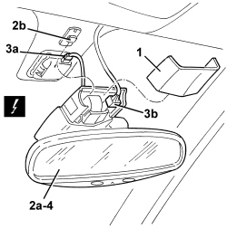

7065C60 INTERIOR REAR VIEW MIRROR FOR VERSIONS WITH RAIN/DUSK SENSOR - R.R.
- Path
- Procedures > 70 FITTINGS > 7065 SAFETY BELTS AND ACCESSORIES > 7065C ACCESSORIES AND DECORATIONS > 7065C60 INTERIOR REAR VIEW MIRROR FOR VERSIONS WITH RAIN/DUSK SENSOR - R.R.
- Kind
- repair procedure (removal / refitting; the operation number is the code)
- Applies to
- all engines; all production periods
- Interactive page
- https://sloeber94.github.io/elrnDB/alfa/159/en/#/939011377
Applies to: all engines; all production periods
 Removing
Removing
 Refitting
Refitting1. Remove the surround.
2. Release rear view mirror (2a) from retainer (2b) by lowering it.
3. Detach electrical connections (3a, 3b).
Description | Component |
|---|---|
ELECTRO-CHROME INTERIOR REAR VIEW MIRROR |
4. Recover the complete rear view mirror.

Applies to: all engines; all production periods
Refitting
Removing- Check that the complete rear view mirror is not damaged.
- Secure the electrical connections.
- Engage the rear view mirror into the retainer.
- Fit the surround.
Topics linked from this page (1)
Topics that link to this page (20)
- 5050B64 RAIN SENSOR ELECTRONIC UNIT - R.R
- 5050B70 RAIN/DUSK SENSOR - R.R.
- E2010 SIDE LIGHTS/NUMBER PLATE LIGHT - WIRING DIAGRAM
- E2010 SIDE LIGHTS/NUMBER PLATE LIGHT - COMPONENT LOCATION
- E2010 SIDE LIGHTS/NUMBER PLATE LIGHT - WIRING DIAGRAM
- E2010 SIDE LIGHTS/NUMBER PLATE LIGHT - COMPONENT LOCATION
- E2010 SIDE LIGHTS/NUMBER PLATE LIGHT - WIRING DIAGRAM
- E2010 SIDE LIGHTS/NUMBER PLATE LIGHT - COMPONENT LOCATION
- E2010 SIDE LIGHTS/NUMBER PLATE LIGHT - WIRING DIAGRAM
- E2010 SIDE LIGHTS/NUMBER PLATE LIGHT - COMPONENT LOCATION
- E2011 DIPPED HEADLIGHTS - WIRING DIAGRAM
- E2011 DIPPED HEADLIGHTS - COMPONENT LOCATION
- E2011 DIPPED HEADLIGHTS - WIRING DIAGRAM
- E2011 DIPPED HEADLIGHTS - COMPONENT LOCATION
- E3020 WINDSCREEN WASH/WIPE - WIRING DIAGRAM
- E3020 WINDSCREEN WASH/WIPE - COMPONENT LOCATION
- E3032 REAR VIEW MIRRORS ADJUSTMENT - WIRING DIAGRAM
- E3032 REAR VIEW MIRRORS ADJUSTMENT - COMPONENT LOCATION
- E6020 AIR CONDITIONER - WIRING DIAGRAM
- E6020 AIR CONDITIONER - COMPONENT LOCATION